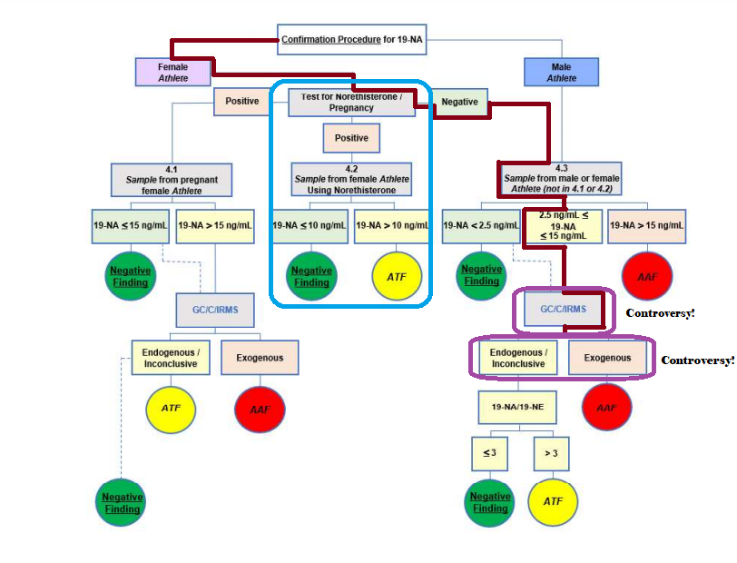
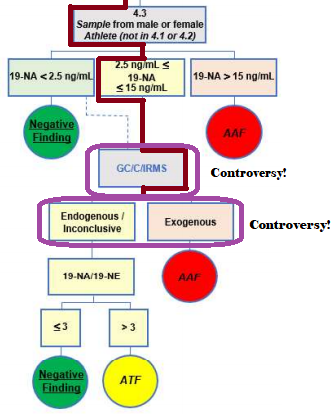
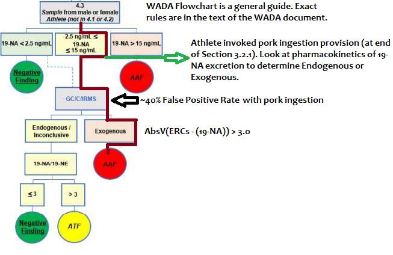

Houlihan, Burrito-Gate and the Problems of Sports Drug Testing
An Editorial Opinion by Twoggle (@Twoggle3)
July, 2021
Part 1: Shelby Houlihan and Burrito-Gate
Introduction
On June 14, 2021, Shelby Houlihan, a U.S. Olympian and American record holder on the track at 1,500 meters and 5,000 meters announced that she received a 4-year ban
from the sport of Track & Field (Athletics) due to a positive drug test for the anabolic steroid, nandrolone. Inaccurate information about the case spread around the
Internet in the form of articles, videos and tweets. Part 1 of this article was written to clear up misconceptions about this case. Before diving into the details of this case,
readers should note that I do not know Shelby Houlihan or anyone associated with her or with her sponsors.
Parts of this article contains scientific information. To make this article easier to understand, I will gradually introduce terms and concepts. In order to whet your
appetite for further reading, I will list four factual statements that will be addressed later in the aricle:
- Fact #1: One of the tests that the laboratory used has a 40% false positive rate! It was little better than flipping a coin.
- Fact #2: Drug testing laboratories and organizations have known for well over a decade that eating certain pork products (available in the U.S., but much more
common outside the U.S.) could trigger a positive test for nandrolone. The fact that eating certain pork products could produce a positive nandrolone test is written
into drug testing organization guidance documents.
- Fact #3: This case does not revolve around whether Shelby Houlihan can prove she ate pork products with nandrolone, but instead revolves around whether the laboratory used the correct
testing procedures and the correct drug testing organization guidance documents.
- Fact #4: There is no set limit on the amount of nandrolone metabolites measured in the urine. Instead, part of the drug testing organization’s guidance
document includes a flowchart showing varying levels of nandrolone metabolites can either cause a drug test fail or a drug test pass depending upon the results of
additional laboratory tests.
Before going over the details of the case, it is important to understand the organizations involved in the case as well as the case timeline. That information is presented below:
Organizations
- Paul Greene, Global Sports Advocates. He is the lawyer for Shelby Houlihan.
- WADA: World Anti-Doping Agency. WADA sets the world standards for doping in sports. The WADA rules only apply to sports
organizations that agree to abide by the WADA rules.
- World Athletics: An international organization that manages major competitions for Track & Field, Cross Country
Running, Road Racing, Race Walking, Mountain Running, Trail Running and Ultra Running. Initial hearings on doping cases are heard by the
World Athletics Disciplinary Tribunal.
World Athletics was formerly known as IAAF.
- AIU: Athletics Integrity Unit. An organization that is used by World Athletics for additional drug
testing of prominant athletes that are in the
AIU registered testing pool. These drug tests are often in addition to drug tests conducted by an athlete's national drug testing organization.
- USADA: United States Anti-Doping Agency. One of many national anti-doping organizations set up by each country
to conduct drug testing in sports. USADA was not involved in the Shelby Houlihan case.
- CAS: Court of Arbitration for Sport. An independent organization made up of experts on sports
law and arbitration. Athletes and other entities can appeal previous decisions to a 3-member arbitration team. The members of the arbitration team are chosen from a list of
approved arbitors. One arbitor is chosen by each of the two parties involved in the case. The third arbitor, who leads the team, is then chosen by the two existing arbitors.
CAS decisions do not have to be unanimous. CAS is often considered the last chance for an appeal in most cases.
- Swiss Federal Tribunal: CAS operates under Swiss law. Therefore, a CAS decision can be appealed to
the Swiss Federal Tribunal. However, in most cases, the Swiss Federal Tribunal will not take a case ruled on by the CAS unless the way the case was handled went against one or more of a
limited set of public policy issues involving Swiss law. The Swiss Federal Tribunal can rule that some part of the case was not handled appropriately and then send the case
back to the CAS for re-evaluation.
Case Timeline
- December 15, 2020. Drug test conducted by AIU on Shelby Houlihan. The urine sample was split into “A” and “B” samples.
- January 14, 2021. AIU informed Shelby Houlihan that her “A” sample had tested positive for nandrolone. She was provisionally suspended.
- January 19, 2021. The lawyer for Shelby Houlihan, Paul Greene, told the AIU that the most likely source of the nandrolone was from ingestion of pork
in a burrito purchased from a food truck the night before the drug test. He requested that her “B” sample be tested based on published
WADA guidelines related to nandrolone from pork consumption.
- January 22-26, 2021. Analysis of the “B” sample.
- End of January, 2021. “B” sample analysis results confirm the “A” sample analysis but there was no documentation given to the Shelby Houlihan’s
legal team related to the tests that were requested and required by the WADA guidelines.
- February-April, 2021. Houlihan’s team submits additional evidence to the AIU including a hair sample analysis and a polygraph test.
- Late April, 2021. Paul Greene files a case with CAS to force the AIU to charge Shelby Houlihan so that the case could move forward before the
U.S. Olympic Track & Field Trials in June, 2021.
- Mid May, 2021. The AIU formally charged Shelby Houlihan with a drug violation.
- Late May, 2021. Paul Greene and the AIU agree to a single hearing before CAS rather than an initial hearing by the World Athletics Disciplinary Tribunal in hopes of getting Shelby Houlihan
exonerated in time for the U.S. Olympic Track & Field Trials in June, 2021.
- June 1, 2021. CAS arbitration hearing held.
- June 11, 2021. CAS ruled against Shelby Houlihan.
- June 14, 2021. Shelby Houlihan's team announced decision of the CAS arbitors at a press conference.
High Levels of Nandrolone Found in Some Pork Products
Definitions
- Nandrolone: Also known as Nandrolone Decanoate and 19-nortestosterone.
This anabolic steroid is typically injected into the muscle and is used medically for conditions such as
anemia and renal (kidney) insufficiency.
Failed drug tests for nandrolone have been seen in strength athletes (Igor Razoronov,
Adrian Zielinski) and sprinters (Linford Christie,
Merlene Ottey). In some cases, particularly outside of the United States, metabolites of nandrolone
have been found in the urine of endurance athletes (Dieter Baumann,
James Kibet).
- Nandrolone Precursor: Chemicals that convert to nandrolone in the body. Sometimes found in supplements.
- 19-NA: Also known as 19-Norandrosterone. It is a metabolite of nandrolone that excreted in the urine after taking nandrolone. 19-NA can also be found in urine after
1) taking certain nandrolone precursor supplements (19-norsteroids) such as 19-norandrostenedione (Ex. 1,
Ex. 2);
2) taking certain types of oral contraceptives (Ex. 1); 3) eating uncastrated pig meat
(Ex. 1,
Ex. 2);
4) taking supplements/medicines or eating meat that is unexpectedly contaminated with nandrolone precursors
(Ex. 1,
Ex. 2); and 5) can be found naturally in the urine at low levels from
the breakdown of certain steroids naturally found in the body (Ex. 1,
Ex. 2).
“19-NA” will be referenced throughout this article. One of the first things drug testers look for (when testing for nandrolone) is to look at the 19-NA concentration
in the urine.
- ng/mL: Nanograms per milliliter. A nanogram is one billionth of a gram. In this case, ng/mL is the concentration of 19-NA in the urine.
- Pig Offal: Pig organ meat used in food.
Nandrolone can be found in high levels in uncastrated male pigs ("boars"). In 2008,
research was published showing that high concentrations
of 19-NA can be found in the urine of subjects eating pork meat and organs from uncastrated pigs. Shelby Houlihan had an 19-NA concentration of approximately 5ng/mL (see 5:15 into
the Shelby Houlihan Press Conference). This 2008
research showed in Table 2 that ingesting 300 grams
(10.6 ounces) of uncastrated pig organ meat could lead to as much as 130ng/mL of 19-NA in the urine: more than 25 times higher than the 5ng/mL found for Shelby Houlihan. To
be fair, however, there is often approximately 4 ounces of meat in a burrito (Ex. 1,
Ex. 2). This
would still be equivalent to 49ng/mL of 19-NA in urine or nearly 10 times higher than the 5ng/mL found for Shelby Houlihan.
There are three very important points that should be considered when looking at Table 2 of this research:
- This research
discussed directly above is the research that WADA cites (at the end of Section 3.2.1) in their
April 2021
and June 2021 WADA Technical Documents on Nandrolone.
They reference high levels of 19-NA found in urine after ingestion of uncastrated pig meat. There are other research papers showing
high levels of 19-NA in the urine after ingestion of pork products (
Ex. 1,
Ex. 2), but this research paper is the one that WADA lists in
their Technical Document.
- Look again at Table 2
and you will see that the measurements only looked at three (3) people for 300g (10.6 ounces) of meat. Also, notice the huge variation of the
19-NA concentrations for each individual when ingesting 300g (21.4ng/mL - 130ng/mL). It is likely that in a much larger experiment, looking at 1,000 individuals for example, that some
individual 19-NA concentrations would be higher than the maximum of 130ng/mL listed in Table 2.
- In Table 2, there are measurements of 19-NA levels in urine
after ingesting uncastrated pig meat (not the organs). You can see that it is not only the organ meat ingestion that can lead to reliatvely high levels of 19-NA measured in
the urine and potentially cause a drug test fail.
Did Shelby Houlihan Ingest Pork Products With a High Level of Nandrolone?
The answer is that it really does not matter if Shelby Houlihan can prove she ate pork with high levels of nandrolone. WADA changed their nandroline guidelines
in April, 2021 indicating that a different type of analysis needs to be performed should an athlete claim that the nandrolone came from pork ingestion. This
will be discussed in the next section. In the interest of thoroughness, a few issues related to the possibility of obtaining a burrito with nandrolone in the pork
will be detailed below:
This section and the previous section of the article proves Fact #2 from the article Introduction:
“Drug testing laboratories and organizations have known for well over a decade that eating certain pork products (available in the U.S., but much more common outside
the U.S.) could trigger a positive test for nandrolone. The fact that eating certain pork products could produce a positive nandrolone test is written into
drug testing organization guidance documents.”
Nandrolone Drug Testing Flowchart
The following flowchart appears the bottom of the April 1, 2021 WADA Technical
Document on nandrolone (TD2021NA). I added a couple of colored boxes as well as a red line so that I can refer to them when discussing the flowchart. If you click on the
flowchart, it will open up in a new tab so that you do not have to keep scrolling up and down between the text and flowchart.
The flowchart is just a general guide to be followed by the laboratory during the testing procedure. In order to understand the meanings of the solid lines, dotted lines,
boxes and circles, the laboratory and other readers must refer to the official rules in the text of the
April 1, 2021 WADA Technical Document. Below the flowchart,
I will define two (2) chemicals you will need to know and a few other key terms. Once you understand the terminology, it will be easy to follow the flowchart to see exactly where
the controversy lies.

Definitions
- 19-NE: Also known as 19-noretiocholanolone. A metabolite of nandrolone that appears in the urine after taking nandrolone. This chemical is only considered by
drug testers if certain criteria are met when they screen for nandrolone. More on this chemical later in this article.
- Norethisterone: Norethisterone is found in some oral contraceptive products for females. 19-NA is a
metabolite of norethisterone. Remember, when testing
for nandrolone, drug testers look for 19-NA in the urine. Another metabolite of norethisterone found in the urine is called THNE.
- Endogenous: “Endogenous” typically means already existing within the body or produced by the body. But at the end of Section 1.0, in the
April 1, 2021 WADA Technical Document on nandrolone (TD2021NA), endogenous
also includes the “consumption of edible parts of non-castrated male pigs.” Similar wording was found in
March 1, 2019 WADA Technical Document on Nandrolone (TD2019NA).
- Exogenous: "“Exogenous” typically means found outside of the body. In the context of the
April 1, 2021 WADA Technical Document on nandrolone (TD2021NA),
it means everything that is not mentioned as “endogenous” at the end of Section 1.0 of the
April 1, 2021 WADA Technical Document on nandrolone (TD2021NA).
- Inconclusive: “Inconclusive” in this context means something that prevents reliable measurements. See section 4.3 (row 2, column 3) of the
April 1, 2021 WADA Technical Document on nandrolone (TD2021NA).
- GC/C/IRMS test: Gas Chromatography Combustion Isotope Ratio Mass Spectrometry. In some circumstances, this test can be used to determine if the 19-NA is of endogenous
or exogenous origin. In cases where the GC/C/IRMS test is appropriately-used, it can be the key to determining if the athlete failed the drug test.
- Adverse Analytical Finding: Abbreviated as AAF. It means that the athlete failed the drug test and is seen as a red circle in the flowchart above.
- Negative Finding: It means that the athlete did not fail the drug test and is seen as a green circle in the flowchart above.
- Atypical Finding: Abbreviated as ATF. It means that the athlete did not fail the drug test, but the results are unusual and may trigger more testing at a
later date. It is seen as a yellow circle in the flowchart above.
Fours Reasons That Shelby Houlihan Would Not Dope With Nandrolone
Before following the red line on the flowchart showing the testing of Shelby Houlihan's urine samples, it is important to look at the four reasons that it makes no sense
for Shelby Houlihan to have deliberately taken nandrolone:
- Look at the blue box I created in the full flowchart (above) and notice how there is a test for both norethisterone and pregnancy. Norethisterone is found
in certain oral contraceptive products. As mentioned above, 19-NA is a metabolite of norethisterone.
You can see in the flowchart above and Section 3.3.1 of the
April 1, 2021 WADA Technical Document
that if a young woman is taking an oral contraceptive product and tests show that there is a reasonable
level of the norethisterone metabolite, THNE, in the urine, the athlete can only produce a Negative Finding or an Atypical Finding (ATF). Any young woman who
wants to deliberately take small amounts of nandrolone would also take an oral contraceptive with norethisterone to guarantee that they would not have an
Adverse Analytical Finding (AAF) for nandrolone. Shelby Houlihan was not taking an oral contraceptive with norethisterone and therefore would either be
an ignorant sports doper or, much more likely, she inadvertently ingested a small amount of nandrolone from another source such as pig offal.
- In order for nandrolone to get into the body in sufficient quanity to have a medicinal or performance-enhancing effect, it is
injected into the muscles. When taken orally, it is broken
down quickly by the liver and excreted as the metabolites, 19-NA and 19-NE. Oral supplementation of nandrolone or
nandrolone
precursors such as 19-norandrostenedione has been shown to be ineffective at improving athletic performance
(Ex. 1,
Ex. 2). The
reason why oral ingestion of nandrolone or nandrolone precursors is ineffective as medicine or doping is explained in
Significance of 19‐norandrosterone in athletes' urine samples:
“When orally administered, due to extensive first pass metabolism, the metabolites are rapidly and massively excreted in the initial hours following administration.”
Figures 1 and 2 of the following research paper show how quickly
the 19-NA concentration in the urine spikes and then returns to near zero (within 12 hours) after orally ingesting a nandrolone precursor. The nandrolone is quickly broken down
by the liver to the 19-NA and 19-NE metabolites and then rapidly excreted.
The problem with injecting nandrolone for doping purposes is that the concentration of 19-NA in the urine spikes to extremely high levels and stays at high levels or weeks
and sometimes many months. In this
research
paper (click on “pdf”), in Table 4 (left-most Geometric Mean column) and in Figure 2, you can see that the single injection of nandrolone creates a high concentration
of 19-NA in the urine for weeks (in the case of one 50mg injection) and months (in the case of one 150mg injection). This
research
paper (click on “Download PDF”) shows in the middle of Figure 1 and espeically in Table 2 that the concentration of 19-NA in the urine can remain high for months after a
single injection of nandrolone.
Looking at the USADA test history database, Shelby Houlihan had four drug tests in the 4th
quarter of 2020 and three drug tests in the 1st quarter of 2021. She would have to be an amazingly ignorant doper to inject nandrolone since it can easily
be detected as the 19-NA metabolite in the urine for months or to ingest a nandrolone supplement since it is ineffective and quickly eliminated from
the body. The much more likely scenario is that she inadvertently ingested a small amount of nandrolone from another source such as pig offal.
- As a prominent athlete, Shelby Houlihan is required to provide a 60-minute window every single day where a drug tester can come to her location and collect urine
samples. See the FAQ #4 in the Athlete Central:
Frequently Asked Questions. Since plans can change, WADA allows athletes to update their “Whereabouts” and their 60-minute window in the
ADAMS database. If Shelby Houlihan was doping with an ineffective
oral nandrolone supplement and was ignorant about taking an oral contraceptive with norethisterone to guarantee passing a drug test, she still could have taken
oral nandrolone on the night of December 14th and moved her 60-minute window from 6am on December 15th to 11pm on December 15th to guarantee passing the drug test
as the 19-NA would have been eliminated from her urine by then. The much more likely scenario is that she inadvertently ingested a small amount of nandrolone from another
source such as pig offal.
- It would be medically reckless for Shelby Houlihan to take nadrolone regularly. Numerous articles have been written that Shelby Houlihan has a hereditary condition
known as hereditary spherocytosis. As a child she had to have both her spleen and gallbladder removed. This article is not divulging any confidental medical information as
these facts have been written about and available online for many years
(Ex. 1,
Ex. 2).
One of the possible hazards of spherocytosis can be a unhealthy increase in the levels of bilirubin in the body leading to a condition known as jaundice. See
the section labeled, “Laboratory Diagnosis” on page 810 of this article and
the section labeled, “Jaundice” on this informational
web page.
Anytime from shortly after gallbladder removal to decades after such an operation, a condition can develop called Post-cholecystectomy syndrome (PCS). From this
research paper: “The incidence of postcholecystectomy syndrome
has been reported to be as high as 40% in one study, and the onset of symptoms may range from 2 days to 25 years”. PCS can lead to an increase in bilirubin and
jaundice in some cases. Nandrolone can, in some cases, also significantly increase bilirubin in the body. See the Discussion section of
this
research paper (Click on “Download full-text PDF”). Two of the contraindications
of taking nandrolone is “jaundice” and “impaired bilirubin excretion with liver disease.” It would be medically reckless to take nandrolone as it
can lead to bilirubin increase and jaundice at the same time that hereditary spherocytosis and potential PCS from gallbladder removal would tend towards the same outcome.
The Red Line (in the flowchart)
As we follow the red line down the flowchart, we get to the key section where there is controversy regarding the laboratory testing of Shelby Houlihan's urine sample. Below is
a clipping of that part of the flowchart:

The three boxes (in the partial image of the flowchart directly above) with the urine 19-NA concentration largely determines what direction one goes in the flowchart:
- If the concentration of 19-NA in the urine is > 15ng/mL, then it is an automatic AAF (drug test fail) (red circle near the top right).
- If the concentration of 19-NA in the urine is < 2.5ng/mL, then it is a likely a Negative Finding (green circle near the top left), but there is that dotted line from
the “19-NA < 2.5ng/mL” box to the GC/C/IRMS box. In order to understand what that means, we must go to the official rules of testing which is laid
out in the text of the document. The flowchart is just a general guide. In the first bracketed comment on Page 3 of the
April 1, 2021 WADA Technical Document on nandrolone (TD2021NA)
we learn that GC/C/IRMS “may be performed at concentrations below 2.5 ng/mL, depending on the Laboratory’s
analytical capacity.”
- If the concentration of 19-NA in the urine is between 2.5ng/mL and 15ng/mL, and Shelby Houlihan’s samples had a concentration of approximately 5ng/mL, then it appears from the
flowchart that we would use the GC/C/IRMS test to determine if the 19-NA is of endogenous or exogenous origin. However, the flowchart is just a general guide and
the official rules are spelled out in the text of the document. In 2021, at the end of section 3.2.1,
WADA added
“Guidance to discriminate between oral consumption of natural sources of 19-NA and injection of norsteroid preparations based on the pharmacokinetics of 19-NA excretion.”
At the end of Section 3.2.1 of the
April 1, 2021 WADA Technical Document on nandrolone (TD2021NA),
WADA states that if the athlete invokes that edible parts of intact pigs is the source of the nandrolone, then an entirely different
test needs to be performed and not the GC/C/IRMS test as that test may be inaccurate in this case:
“Following consumption of the edible parts of non-castrated male pigs, concentrations of excreted
19-NA in urine are usually in the low ng/mL range (< 10 ng/mL), although higher concentrations
have been exceptionally reported [3]. The origin of the urinary 19-NA may not be established by
GC/C/IRMS analysis, since the varying diets of migrating wild boars lead to dissimilar δ13C values
which may range between -15 ‰ and -25 ‰ [9]. Therefore, if the consumption of edible parts of
intact pigs is invoked by an Athlete as the unlikely origin of a 19-NA finding, this may be established
based on the pharmacokinetics of 19-NA excretion [3, 5, 16-18]. Profiles of 19-NA and 19-NE excretion
following oral ingestion will have a different time course than following an injection of 19-
norsteroids.”
Definitions
- Pharmacokinetics of 19-NA excretion: The measurement of 19-NA excretion from the body over time. This testing can be done by analyzing the
previous and subsequent urine drug tests that measured the concentration of 19-NA.
Notice how the quoted text above is specific that the endogenous or exogenous “origin of the urinary 19-NA may not be established by
GC/C/IRMS analysis.” The text then goes on to lay out in some complex scientific detail why the GC/C/IRMS test may be
inaccurate in this case. Instead, the text of the WADA document recommends that the laboratory use the “pharmacokinetics of 19-NA
excretion” to determine the origin of the 19-NA found in the urine. As stated in the WADA document, if the nandrolone
is injected, the 19-NA excretion has a different time course (i.e., rate of excretion) than if the nandrolone is ingested (from pork for example).
Injected nandrolone bypasses the liver, stays in the body for months and high levels of 19-NA can be seen in the urine for months. Therefore,
the key for Shelby Houlihan should have been to look at the levels of 19-NA in drug testing samples prior to and after the test on December 15, 2021.
Looking at the USADA test history database, Shelby Houlihan had four drug tests in the 4th
quarter of 2020 and three drug tests in the 1st quarter of 2021. That is a sufficient number of drug tests to see if there were other results showing a
high concentration of 19-NA in the urine, indicating possible injections of nandrolone.
Again, looking back at the flowchart, the key is how to determine if the measured 19-NA is of endogenous or exogenous origin. If it is of endogenous
origin, then the flowchart branches to the left and the results are either a Negative Finding or Atypical Finding (ATF) depending on the ratio of
19-NA to 19-NE found in the urine. If it is of exogenous origin, then
the results indicate a drug test fail otherwise known as an Adverse Analytical Finding (AAF). It would seem inappropriate for a laboratory to use the
GC/C/IRMS test in this case where the WADA document states that the GC/C/IRMS may be inaccurate and the document provides one appropriate testing alternative
(pharmacokinetics of 19-NA excretion). The Houlihan legal team never received any information from the lab about pharmacokinetics of 19-NA excretion and
therefore the laboratory may not have looked at it. The green line and arrow in the partial flowchart below shows what should have happened based on the text in the
April 1, 2021 WADA Technical Document on nandrolone (TD2021NA).

This section and the previous section of the article prove Fact #3 and Fact #4 from the article Introduction:
“This case does not revolve around whether Shelby Houlihan can prove she ate pork products with nandrolone, but instead revolves around
whether the laboratory used the correct testing procedures and the correct drug testing organization guidance documents.” and
“There is no set limit on the amount of nandrolone metabolites measured in the urine. Instead, part of the drug testing organization’s guidance document
includes a flowchart showing varying levels of nandrolone metabolites can either cause a drug test fail or a drug test pass depending upon the results of
additional laboratory tests.”
The 40% False Positive GC/C/IRMS Test
There is no question that once the Houlihan legal team invoked the WADA clause on January 19, 2021 that the nandrolone came from pork consumption, the GC/C/IRMS test should
not have been performed on the B sample. Instead, the analysis should have focused on the “pharmacokinetics of 19-NA excretion.”
GC/C/IRMS Test
The GC/C/IRMS test is one way that the laboratory can determine if the 19-NA found in the urine is from endogenous or exogenous origin. As you can see from the flowchart above, if
the 19-NA is of endogenous origin, the flowchart branches to the left and there cannot be a drug test fail, only a Negative Finding or an Atypical Finding. The GC/C/IRMS test compares the
amount of the Carbon-13 isotope to the Carbon-12 isotope found in 19-NA. The isotope ratio tends to be different for naturally-occurring nandrolone in the body or in pork as compared
to nandrolone manufactured from plant products. The results of the test is expressed as “Delta Carbon-13” using the symbol: δ13C. The units of measurement
is expressed in “parts per thousand” using the symbol: ‰. In the press conference,
Paul Greene stated that GC/C/IRMS test for Shelby Houlihan showed a δ13C = -23‰.
There are several research papers showing that endogenous 19-NA from nandrolone tends to have δ13C values between -16‰ and -26‰, while exogenous 19-NA
from injected nandrolone (and most oral supplements) tends to have δ13C values between -27‰ and -34‰. In Table 2 of this
research
paper (click on “Download PDF”), the authors show that administration of various synthetic nandrolone products produced a δ13C values between -26.3‰ and -30.9‰.
Figure 5 of this research paper shows the clear
difference in δ13C values between endogenous 19-NA (-19‰ to -25‰) and exogenous 19-NA (-27‰ to -31‰). In Table 1 of the following
research presented at
the 32nd Manfred Donike Workshop on Doping Analysis, shows δ13C values at -24.2‰ to -25‰ as a drug test pass.
Changing the GC/C/IRMS Results Interpretation
In the 2015 WADA Technical Document
on nandrolone (TD2015NA), at the bottom of page 2, there were three criteria that had to be met for the GC/C/IRMS test to find the 19-NA as exogenous and a drug test fail:
- The δ13C values of 19-NA had to be outside the normal endogenous range of -16‰ to -26‰. In other words, it had to be -27‰ to -34‰ (or lower).
- The difference in the δ13C value of 19-NA and the δ13C value of an “Endogenous Reference Compound (ERC) such as pregnanediol or
androsterone measured in the urine sample could not be greater than 3‰. The idea behind this test is that if the 19-NA is endogenous, the δ13C value of 19-NA
should not differ much from the δ13C value of other steroids in the urine sample.
- The laboratory measurement for the total level of “uncertainty” of both of the δ13C value tests for 19-NA and the endogenous reference compound
should not be greater than 1‰.
By 2014, WADA had a concern that some oral supplements might contain nandrolone precursors that would have δ13C values in the endogenous range of -16‰ to -26‰.
A research paper presented at the 32nd Manfred Donike Workshop on Doping Analysis concluded:
“In order to keep the validity of the IRMS confirmation analysis, a continuous survey of the delta values of potential nandrolone precursors present in the market is needed.
Based on the current data, a revision of the current criteria to release an AAF [failed doping test] for 19-NA is advisable considering what has been suggested for the detection of
synthetic forms of endogenous anabolic androgenic steroids by IRMS (i.e., testosterone or its precursors), in the new WADA technical document, with the inclusion of the inconclusive
cases when not all criteria are met.”
Even though the ingestion of nandrolone precursors has not been shown to have any beneficial doping effect and that the nandrolone is eliminated very quickly from the body, WADA
decided to change their 2016 WADA Technical Document on Nandrolone.
They completely eliminated the requirement that the δ13C value of 19-NA had to be -27‰ to -34‰ to prove exogenous origin and a doping test fail (AAF). Instead, the
decided to rely only on the difference between the δ13C value of 19-NA and that of the Endogenous Reference Compound to be > 3‰ to prove exogenous origin and
a doping test fail (AAF). See the bottom of page 3. It is true that by 2018, one
research paper
showed that four of nine oral nandrolone precursor supplements on the market in the United Kingdom were created using different plant material and had δ13C values in the
endogenous range. See Table 1 from the research paper.
WADA eliminated one of the main parts of the GC/C/IRMS results analysis that protected athletes from false positive results, namely the requirement that the δ13C value of
19-NA had to be -27‰ to -34‰ (or lower) to prove exogenous origin and a doping test fail (AAF)!
In 2020, research was published looking at subjects who ate uncastrated pig
meat (not organs). The researchers measured the urinary δ13C values of both 19-NA and an Endogenous Reference Compound (ERC) to determine if the difference
would be greater than 3‰. According to the WADA Technical Documents since 2016, a value of greater than 3‰ would be judged as “exogenous” and a drug test fail. You can
see in Table 1 (last column) that 2 out of the 5 subjects (40%) had a difference of greater than 3‰! Therefore, from this research 40% of the time the GC/C/IRMS test is run when an
athlete eats uncastrated pig meat or organs, the test would generate a false positive and the athlete would be banned for four years! The danger of such a high percentage
of false positives as seen in this research is exactly why WADA created their new
April 1, 2021 WADA Technical Document and provided
guidance at the end of Section 3.2.1 to not use the GC/C/IRMS test if the athlete claims the nandrolone is from pork ingestion, but instead to analyze the pharmacokinetics
of 19-NA excretion. It appears that the laboratory and the AIU ignored this guidance.
This section and the previous section of the article proves Fact #1 from the article Introduction:
“One of the tests that the laboratory used has a 40% false positive rate! It was little better than flipping a coin.”
The Lab Director
According to Paul Greene,
the WADA Laboratory that conducted the test on Shelby Houlihan’s samples is in Montreal, Canada and is directed by Dr. Christiane Ayotte.
It seems strange that the samples were sent 3,000 miles across an international border from Beaverton, Oregon to Montreal, Canada when there are other approved WADA Laboratories
much closer in
Salt Lake City, Utah and Los Angeles, California. The athlete, Jarrion Lawson had a drug test performed by AIU in 2018 and the samples were sent to the Los Angeles WADA Laboratory. See
Sections II(A)(5) and II(A)(7).
There very well may be a good reason the samples were sent to the Montreal WADA Laboratory. At some point in the future, maybe the reason will become clear.
The Director of the WADA Laboratory Director in Montreal, Dr. Christiane Ayotte, may have been less than honest in her testimony in the Jarrion Lawson case. What follows is part of
a summary from the Section VIII(B)(62-63)(Page 12) of the
CAS decision:
“Nor was the Panel entirely persuaded by Professor Ayotte’s evidence. Before the Tribunal below, she testified that Trenbolone and metabolite levels measured
in her laboratory were always low and therefore intentional cheaters could not be separated from athletes measured at levels of picograms consistent with food
contaminated by hormones.”
She said that athletes with high levels were rarely seen after the 1990s. But in fact, her lab records showed that some levels measured were large and that the Athlete’s
level was below 18 out of 21 reported since 2013. Moreover, the data she produced for this appeal showed that, indeed, many urine samples in 2018/19 for athletes in America
(where Tenbolone is legal as a muscle promoter in cattle) were positive for Trenbolone metabolites at low levels (of less than 2ng/mL).”
Was it an oversight that Dr. Ayotte’s testimony conflicted with her own laboratory’s records or was she misleading the World Athletics Disciplinary Tribunal and the Jarrion Lawson
legal team? The essence of the following two WADA Code of Ethics requirements (on pages 119-120) from the
World Anti-Doping Code International Standard for Laboratories
may have been violated:
“4.1 The personnel of Laboratories and WADA-Approved Laboratories for the ABP shall not engage in conduct or activities that undermine or are detrimental to the
World Anti-doping Program. Such conduct could include, but is not limited to fraud, embezzlement, perjury, etc. that would cast doubt on the integrity of the anti-doping
program.”
4.6 If a staff member of a Laboratory of WADA-Approved for the ABP is requested to provide evidence in anti-doping proceedings, they are expected to provide independent,
scientifically-valid expert testimony.”
Section 4.6.4.3 states that the laboratory accreditation can be revoked for “A serious or repeated violation(s) of the Code of Ethics.”
Had an athlete provided false testimony, they would very likely be banned from the sport for four years or more. In the real world, outside of the doping testing
organizations, when an expert provides false information, not only are they prevented from being an expert in future cases, but all of their past cases are carefully
reviewed (Ex. 1,
Ex. 2). It does seem
inappropriate that this laboratory appears to have made the decision use a flawed GC/C/IRMS test rather than look at the pharmacokinetics of 19-NA excretion as
suggested in the April 1, 2021 WADA Technical
Document on nandrolone (TD2021NA). The WADA document was published in December, 2020 and not approved until April 1, 2021. However, a re-analysis of the
pharmacokinetics of 19-NA excretion based on other Shelby Houlihan drug tests could easily have been done by the laboratory and the AIU in April, 2021.
Appeal Options
The next step for the Shelby Houlihan team will be to hire a Swiss law firm and appeal to the Swiss Federal Tribunal. Appeals of the CAS arbitration
panels can be based on procedural
grounds: discovery of decisive new evidence or grounds for challenging the selection of an arbitor, or
on substantive
grounds: “A decision only violates substantive public policy if it is rendered in disregard of fundamental principles of law and consequently cannot be reconciled
with the essential and widely recognised system of values which serves as the bedrock for any legal order.”
However, an appeal is not necessary should WADA, AIU, World Athletics and the Montreal Laboratory do the right thing to maintain integrity within anti-doping
and sports organizations:
- WADA should remind that Montreal Laboratory and the AIU that they must comply with the guidance in the WADA Technical Documents and that the 40% false positive
GC/C/IRMS test should not have been used in this case. They can order a re-evaluation of the case.
- AIU should realize that they are damaging the reputation of anti-doping organizations by ignoring WADA guidance, despite a 2-1 victory at the CAS hearing. They
could reverse the decision as well.
- The WADA Laboratory Director, Dr. Christiane Ayotte, should publically state that under the recent WADA guidance, the GC/C/IRMS test would not be used and should not be used
due to the extremely high false positive rate where pork ingestion is involved. She should call for a re-evaluation of the case based on the pharmacokinetics of 19-NA excretion.
- World Athletics should remind the AIU that drug tests should be conducted and evaulated under the most current WADA guidance.
Lex Mitior
The Houlihan team argued at the CAS hearing that the test to determine the endogenous or exogenous origin of the 19-NA in the urine should have involved analyzing
the pharmacokinetics of 19-NA excretion as laid out in the
April 1, 2021 WADA Technical Document. It is clear that the AIU argued
against this at the CAS hearing. One important issue related to the WADA documents is that at the top of the
April 1, 2021 WADA Technical Document on nandrolone (TD2021NA),
you can see that it was published on December 21, 2020, but did not go into effect until April 1, 2021. Shelby Houlihan had her drug test on December 15, 2020 before
this document went into effect.
The previous WADA technical document went into effect March 1, 2019.
This older document made no mention of looking at the pharmacokinectics of 19-NA excretion. The March 1, 2019 WADA document was in effect during the drug
testing procedure. On the other hand, the April 1, 2021 WADA document was in effect during the CAS hearing. So, which document should be used? It is possible that
the 2 of 3 CAS arbitors who voted against Shelby Houlihan on the issue of testing procedures used the WADA document from March 1, 2019.
However, there is a legal principle called “lex mitior” which means “If the law has changed after an offense was committed, the version of the
law that applies is the one that is more advantageous for the accused.” In this case the rules changed before the June 1, 2021 hearing was held on the Houlihan case.
In a
2010 case before the Swiss Federal Tribunal (see 6 paragraphs from the bottom) and that involved the CAS, the Court ruled on the merits of lex mitior.
While this particular case in front of the Swiss Federal Tribunal ultimately went against the athlete, it appears the Court will consider the principle of lex mitior.
Houlihan may have a good case since it appears two of the three CAS arbitors may have relied on an old, 2019 WADA technical document at the hearing to decide if the correct
laboratory testing procedures were followed.
In a completely separate case, the AIU agreed that new WADA Guidance should be followed and can reverse a drug testing ban. See Sections 15-16 and 21-22 in the following
summary.
Disregard for the Fundamental Principles of Law
The use of the GC/C/IRMS test with a 40% false positive rate in cases of uncastrated pork ingestion is abhorrent and disregards of fundamental principles of law.
If CAS mistakenly relied on this test when deciding if the correct laboratory procedures were followed, the CAS ruling should be reversed and sent back to a new CAS panel with a
suggestion that the current WADA guidelines should be followed, including the analysis of the pharmacokinetics of 19-NA excretion.
Part 2: The Problems of Sports Drug Testing
Introduction
Many fans of running as a sport think that most elite runners are “dopers” or “cheaters.” It’s a sad state of affairs that
is reminiscent of the Salem Witch Trials from centuries ago. The truth is there are probably some athletes who fail a drug test who are deliberately cheating (e.g.,
Marion Jones
Eddy Hellebuyck),
some who were inadvertently exposed to banned substances through contamination or other means (e.g.,
Ajee Wilson,
Will Claye,
Jarrion Lawson,
Brenda Martinez),
and some who may be completely innocent (e.g.,
Gunduz Ismayilov,
see Part 1 of this article above).
Part 2 of this article was not written to denigrate anti-doping organizations or the many wonderful people who work for these organizations, but it was written
to point out possible problems and suggest possible solutions.
Guilty Until Proven Innocent
In Sections 10.1 and 10.2 of the
World
Athletics Disciplinary Tribunal Rules, the “Burden and Standard of Proof” is:
“10.1 The [Athletics] Integrity Unit will have the burden of establishing that a Non-Doping Violation
has been committed. The standard of proof will be whether the Integrity Unit has
established the commission of the alleged violation to the comfortable satisfaction of
the Panel. This standard of proof in all cases is greater than a mere balance of
probability but less than proof beyond a reasonable doubt.”
10.2 Where the Integrity Code of Conduct places the burden of proof upon the Applicable
Person alleged to have committed a violation to rebut a presumption or establish
specified facts or circumstances, the standard of proof will be by a balance of
probability.”
At first glance it appears that 10.1 requires the Athletics Integrity Unit (AIU) to prove beyond the balance of probability that the drug violation occurred, the way it appears to
work is that if there is a laboratory report that claims a doping violation and the AIU brings its case to the World Athletics Disciplinary Tribunal, that is all of the proof it
needs. The AIU’ proof is already built in to the laboratory report. On the other hand, the an innocent athlete is assumed guilty and must prove beyond the
“balance of probability” their innocence. This also known as their “strict liability“ standard: if a laboratory claims that a doping substance is found in
your body for any reason, you are guilty unless you can prove otherwise.
There are advantages to a “strict liability“ standard in relation to performance enhancing drugs and sports. We may not be able to remove any dopers from sports
if the athlete was assumed to be innocent and the anti-doping organizations had to provide other corroberating evidence to prove guilt beyond a reasonable doubt. On the other hand,
if you can put yourselves in the shoes of an elite athlete for a moment: You are training for hours every day, practicing various recovery and injury prevention routines for
additional hours every day all for the chance of representing your country and a World Championships or the Olympics. Let’s say you are suddenly accused of doping and
sent a lab report by the AIU. The AIU already has their “proof”. You, as the athlete (if you are innocent), start with absolutely nothing: No understanding of the lab
report, no idea why you tested positive and probably no idea where to start to prove your innocence. It’s a tremendously unequal relationship between you as the athlete and
the AIU when it comes to doping charges.
Suggestion
If we are to keep the “strict liability” standard, my suggestion is that World Athletes and the AIU help organize a small committee made up of sports law experts
who have had no association with WADA, AIU, CAS or World Athletics, to help guide them away from being little more than an “attack dog” to more of a partner
in finding the truth (but still aggressive where needed).
Example Case
The following case may not be as clear-cut as the
Ajee Wilson or
Will Claye
cases, but it raises several issues that are relevent to this section and subsequent sections of the article. The case involves nandrolone
and will be much easier to understand if you read Part 1 of this article.
It may appear in my initial discussion of the case that I am trying to defend this athlete, but that is not why I am bringing up this case.
Please read to the end of the discussion.
Gomathi Marimuthu, an 800-meter runner for India was banned in 2019 for failing doping tests for nandrolone. The decision of the World Athletics
Disciplinary Tribunal can be found
here the the CAS arbitration
team decision can be found
here. She had four (4) In-Competition failed doping tests for
nandrolone:
| Test Number |
Date |
“A” Sample
ID |
Concentration
of 19-NA |
Competition |
| 1 |
March 18, 2019 |
A6363569 |
416 ng/mL |
Federation Cup Senior National Athletics Championship (India) |
| 2 |
April 13, 2019 |
A6364751 |
187 ng/mL |
Selection Trials (India) |
| 3 |
April 13, 2019 |
A6364741 |
16.2 ng/mL |
Selection Trials (India) |
| 4 |
April 22, 2019 |
A4339389 |
99 ng/mL |
Asian Athletics Championships, (Doha, Qatar) |
The first thing I noticed is that is that there were two tests on April 13, 2019. It seemed strange until I ready through the
decision of the World Athletics Disciplinary Tribunal, particularly Sections 101-102 where it was explained that the athlete mistakenly filled
the “A” sample bottle first and then the “B” sample bottle. Apparently, the athlete is supposed to fill the “B” sample bottle
to a minimum volume of 30mL and then fill the “A” sample bottle to a minimum volume of 60mL. Because of this error, the athlete provided another
urine sample on the same day. Note: It is also a little strange that the Sample ID # (A6364741) is smaller on the later sample on April 13, 2019 than the
earlier sample (A6364751). I would expect that the Sample ID #’s on the same day would increase.
Far more important is the difference in urine concentration of 19-NA in those samples on the same day, possibly collected within minutes or hours of each other. The
19-NA concentration went down from 187ng/mL to 16.2ng/mL! If this decrease is even possible in this short amount of time, it would occur from oral ingestion
of nandrolone or a nandrolone precursor. To see how slowly the 19-NA urine levels descrease over weeks and months when nandrolone is injected, look at Figures 2 and 3 of
this
research paper (click on PDF link) and Figure 1 of
this
research paper (click on Download full-text PDF). On the other hand, Figures 1 and 2 from
this research paper shows how quickly urinary 19-NA can spike
and return to near zero within 12-24 hours. Therefore, if the urine 19-NA tests are accurate, then it is almost certainly due to an ineffective (for doping purposes) oral
ingestion of nandrolone or nandrolone precursors.
The is where an anti-doping organization should see this result representing oral intake of nadrolone or a nandrolone precursor and say to themselves,
“If we can trust our labs to measure 19-NA correctly, then the nandrolone is clearly coming from an ineffective, oral source. The athlete was exposed to the
source on the day before or the day of three successive competitions where she would have expected to be drug tested. If she was deliberately doping was oral
nandrolone, then she is the dumbest sports doper in the history of the world. More likely, she ingested it inadvertently from tainted food, a tainted supplement or
pig offal.”
This is distinctly different than what appears to be the current attitude in doping cases:
“Convict! Convict! Burn the witch!!!”
Is it possible that this athlete was taking another undetectable banned substance that happened to also be contaminated with nandrolone. Yes, of course that is possible.
But there was no evidence presented that is what happened. We can’s let evidence-less possibilities affect the outcome of this case. If the anti-doping organization had
the attitude presented in the first quote above, it might have led to further investigation of the coach, athlete and other associated athletes by the National Anti-Doping Agency
of India. Maybe a more nuanced look at this case would have led to a lesser ban such as 2 years. Maybe there still would have been a 4-year ban. But it is the attitude change by
the anti-doping organization that is important, in my opinion.
Tribunal Bias
Reading through the First Instance Decisions of the
World Athletics Disciplinary Tribunals, I detect a distinct bias towards the AIU and their experts and against the athlete and their experts. It should be pointed out
again that once a WADA Laboratory comes back with a positive doping test, the AIU has all the evidence it needs to convict and it has experts from other laboratories ready to
testify as their expert witnesses. At the same point in time, the athlete has absolutely nothing: no knowledge of the science, no experts and almost no hope. Therefore,
I do not consider it a bias towards the athlete to give him/her extensions to put their case together. They are, after all, starting from zero, unlike the AIU.
In the World
Athletics Disciplinary Tribunal case for Gomathi Marimuthu mentioned above, in Sections 54-56, the Tribunal did not accept the 2nd statement of the athlete's expert
witness because witness did not sign the statement when it was first submitted. The document with signature was due on April 10, 2020. A reminder was sent out on April 17,
2020 and the expert witness provided a signature on April 21, 2020. The Tribunal ruled that:
“It is a party’s responsibility to prepare the documents it would like to rely on, properly and in time - this was not done by the deadline set, i.e.,
10 April 2020.
In Section 119,
the Athlete pointed out that the laboratory “simulate sequence run log” in relation to the first drug test was conducted on May 6, 2019, but
the signing of the log was not done until June 5, 2019 (nearly one month later). The World Athletics Disciplinary Tribunal accept this late signing of the log without
any statement such as, “It is a party’s responsibility to prepare the documents it would like to rely on, properly and in time....”
On April 24, 2020, the World Athletics Disciplinary Tribunal allowed the AIU to change (“correct”) the laboratory Sample ID #’s. (See
Section 57).
They allowed this even though In Section 23, the Athlete had expressed concern about a “manipulation error or switching of the samples.”
There was no rejection of this AIU change with the statement, “It is a party’s responsibility to prepare the documents it would like to rely on, properly
and in time....”.
It appears that the laboratory and AIU can add signatures and make changes whenever they want, but the athlete and their experts cannot deviate one iota from the rules.
This type of bias can be found in other hearings as well.
The Secret Courts
The World Athletics Disciplinary Tribunal and the Court of Arbitration for Sport (CAS) decisions can “never” be wrong. How do I know this? Simple. It’s because
the decisions, with few exceptions, do not provide even the basic information which would allow an interested party to review and see if there are any mistakes. What is not
available:
- Laboratory Reports
- Hearing Transcripts or Video
- Statements and Documents from Expert Witnesses
- Exibits
The case of
Gomathi Marimuthu
mentioned above is an exception where at least a very minimal amount of basic information was provided, but not enough to see if there were mistakes. If you look at the
First Instance Decisions or
Appeal Decisions related to nandrolone (for example), you will almost
never see any information about the levels of 19-NA in the urine, the δ13C values of 19-NA or the Endogenous Reference Compounds, no levels of 19-NE mentioned,
no levels of GC/C/IRMS uncertainty mentioned, the test for norethisterone metabolites (from oral contraceptives), differentiation between exogenous nandrolone or that
ingested from pork from uncastrated male pigs, etc. For example, for the Shelby Houlihan case, we need to see, for both the “A” and “B” samples,
the concentration of 19-NA, the δ13C values of 19-NA and the Endogenous Reference Compounds, the δ13C uncertainty values, the results of the analysis
of the pharmacokinetics of 19-NA excretion, the test results for norethisterone metabolites and justification for using a 40% false positive GC/C/IRMS in this situation.
What we are likely to get is only mostly irrelevent information relating to why Shelby Houlihan did not prove the nandrolone was from the burrito and some legal justification
as to why they used a 40% false positive GC/C/IRMS test.
The only resource we do have is the panel’s interpretation of experts and a judgement based on who they decide to believe. As an arbitor, hearing a case, making a decision
and then letting the case be forgotten about, without any chance of outside review, can be comforting. There is almost zero chance that you will be shown to have made a mistake.
An athlete goes from an accusation by the WADA Laboratory and the prosecutor (e.g., AIU) and goes before a “secret court” (i.e., World Athletics Disciplinary Tribunal)
where almost nothing is made public. After the athlete loses, they can appeal to another “secret court” (i.e., Court of Abritration for Sport) where again almost
nothing is made public. From the athlete’s perspective, there may be medical or personal reasons to keep parts of the case from the public. But absent those reasons, all
aspects of the case should be made available for public review.
There is another very important reason to make case material public. If you are trying to defend an athlete from a doping accusation, you are at a tremendous disadvantage to
the AIU and WADA Laboratory experts who have access to results from tens of thousands of tests. They can use that secret information to help build their case. At the very
least you should have access to all of the details of the cases that have had hearings. You can look for information in the cases similar to that of your client to help try
and figure out what happened to cause the positive test.
The Impossible Task of Tracking Food Comtamination
On February 27, 2019, the Athletic Integrity Unit (AIU) charged Jarrion Lawson (Sprints/Long Jump) with testing positive to the steroid, Trenbolone. The athlete took the doping test on
April 11, 2018, but was not informed about the positive test for more than two months (June 14, 2018). The athlete lost his case in front of the World Athletics (IAAF) Disciplinary
Tribunal (See summary), but won his
appeal at the Court of Arbitration of Sport (CAS). (See appeal summary
here.) In
Sections 17 and 18 of the initial
Tribunal hearing, you can see that Jarrion Lawson claimed that the restaurant beef was tainted with a tiny amount of trenbolone that showed up in his urine sample. Trenbolone
is a verterinary drug used in the cattle industry. The athlete provided as evidence:
- An affidavit
- A receipt and text messages proving he ate at that restaurant on June 1, 2018
- Hair analysis
- A report from an expert in environmental exposure
- A picture of the packaged meat received from the restaurant from National Beef Packing Company.
- An affidavit from the restaurant owner stating that the meat in the meal purchased was New York Strip Steak and he sourced this meat from Performance Food Group (PFG).
This information was not enough for the AIU. They asked the athlete for:
- “Copies of all purchase orders, invoices, receipts, delivery notes/shipping information and any other
documents that related to all New York Strip Steak ordered/purchased by the Restaurant in the period March 1, 2018 to June 1, 2018 including the relevant product codes and/or
item ID’s and confirmation of the specific supplier”
- “Confirmation of the inventory management platform/software used by the Restaurant and copies of all stock inventories/entries related to New York Strip Steak for the period
March 1, 2018 to June 1, 2018”
- “Copies of any refrigerator/storage records for all New York Strip Steak for the period March 1, 2018 to June 1, 2018.”
In Section 13 of the CAS decision,
it states that the athlete informed AIU that the restaurant did not have this information and even if it did, they would not release it without
a court subpoena. Anyone with common sense can see where these questions are going. Had Jarrion Lawson somehow convinced the restaurant to provide the answers to these
questions, it still wouldn't have proven the meat was tainted with trenbolone. The AIU would have come back with similar questions for the meat distributor: purchase orders,
invoices, receipts, shipping/delivery information, names & address of all farms they do business with, software related to inventory, refrigeration/storage records, etc. Finally,
had the athlete, by some miracle provided this information, then the AIU would request information about each of the farms, record of trenbolone use, where on the cow
it was injected (as discussed at the hearing), possibly even a cow hoof-print and DNA analysis.
The AIU seems to think that all Jarrion Lawson had to do is request these records from the restaurant and the restaurant owner would say:
“Yes, Mr. Lawson. We will stop everything we are doing to help you prove that we serve meat tainted with steroids. Whatever records you need, feel free
to take them. After you are done with us, we will work with our distributor to help you prove that they distribute meat tainted with steroids. Finally, there is
no question that the farms and ranches will be more than happy to help you prove that they are the original source of the meat tainted with steroids.”
It seems like the AIU saw this restaurant scene from Portlandia
and thought to themselves, “This couple is not asking nearly enough questions about the meat they are about to eat!”
The Jarrion Lawson case and other cases of meat and supplement contamination differs from the Shelby Houlihan case. In cases of meat and supplement contamination,
the athlete agrees that there was a doping violation committed, but that they were not at fault and therefore should not receive any ban. During their hearings,
the athlete will ask for a “No Fault” ruling. In the Shelby Houlihan case, Paul Greene argued that had the laboratory and AIU followed correct WADA
procedures, there would never had been an Adverse Analytical Finding (AAF: doping test fail). Jarrion Lawson lost his case for a “No Fault” ruling
with the World Athletics Disciplinary Tribunal largely because he was unable convince the Tribunal that the trenbolone metabolite in his urine more than likely
came from tainted meat. (See Sections
107-108.) The CAS, on the other hand, took into account the totality of the evidence, including the long delay in notifying the athlete making it harder to track
down the meat source, the less than honest testimony of a WADA Laboratory Director, the hair analysis and polygraph test and the athlete’s credibility and history to
conclude that it was more than likely that adverse doping test was due to tainted meat. (See
Sections 90-91.)
What is important is that the CAS realized the futility of being able to track the sources of tainted meat in some cases and weighed other evidence. The AIU and the World
Athletics Disciplinary Tribunal needs to have much more understanding about this issue so as to avoid destroying the careers and reputations of otherwise innocent athletes.
Athletes: No Money, Big Problems!
Only the relatively rich have a chance to properly defend themselves against an accusation by a WADA Laboratory and the AIU of taking a performance enhancing drug.
It doesn’t take much money to be a talented runner: a pair of shoes and a lot of hard work. To be an Olympic runner, may require paying for a coach, massage and other
treatments. It is more expensive, but it will cost more or less depending upon the local economy (e.g., Oregon vs Keyna). But to have a chance at mounting a defence against
a laboratory report that shows a violation of doping rules, it will take a significant amount of money! For months and in some cases years, you may need to:
- Hire a lawyer. Not just any lawyer, but one familiar with the WADA anti-doping code and experienced in handling anti-doping cases.
- Hire one or more scientific experts:
- An expert to travel to and observe the analysis of the “B” sample. This expert needs to be familiar with the
World Anti-Doping Code International Standard for Laboratories. They
need to be able to record any deviations from correct laboratory procedures on each test.
- An expert who can regularly investigate and review the scientific issues surrounding your case and then travel to and testify at World Athletics Disciplinary
Tribunal and CAS hearings. This expert can’t just be you local college professor, but must be someone who is highly-respected for their specific expertise in the scientific
community and preferably in the anti-doping community as well. Your expert will be up against AIU experts who are automatically assumed to be amongst the top scientists in the
anti-doping world.
- A medical expert who can testify about medical condition(s) that you have that could have affected the laboratory tests.
- Hire respected specialists to conduct a hair analysis, a polygraph examination and numerous other tests that could weigh in your favor.
- Extra Tests: Pay for tests on food items, supplements, drugs, etc. Let’s say you want to test three burritos for nandrolone levels and you want to test the
19-NA levels in three subjects after they eat those burritos. You will not find that test available at your local drug store. In fact, you will have to contact the AIU first
to get approved laboratories (likely WADA laboratories) that must conduct such a test and urine sample collection in order for them to accept it.
- Hire a private investigator to track down all of the documentation you need from stores, restaurants, distributors and other companies selling products that may be
related to your case. Some of this legwork could be done by yourself if you decide to set aside your work as an athlete.
- Hire a local lawyer to convince a judge to have subpoenas issued to vendors in order to compel them to provide records.
Example Case
The case of James
Kibet (Kenya) at the World Athletics Disciplinary Tribunal is a good example. He was accused of failing a drug test for nandrolone. Little information about the
laboratory results are provided in the case report. The athlete, having no money, was forced to acquire free legal help. He believed, based on his own research, that a pork fat
syrup product he ingested medicinally while in Italy may have caused the failed nandrolone test. He wanted to get the pork fat syrup tested for nandrolone, but you can see in
Sections 21-23 that due
to financial hardship, the athlete asked AIU to perform the test on the pork fat. Instead of helping the athlete, the AIU gave the him a contact at a German laboratory
in order to get the test done. In the end, the lab could not perform the test because of COVID-19 restrictions. What the AIU and WADA should have said is, “We know
that in some cases uncastrated pork can cause a nandrolone doping failure. But we have never done any tests specifically on pork fat. Also, we know that some supplements and
medicines can be tainted with chemicals that are not on the label. We will help you with this test.” James Kibet lost his case in front of the World Athletics
Disciplinary Tribunal and was banned for four years.
Perhaps you are a Master’s Runner who was planning to convince your “sponsor,” a local running show store that provides you with free shoelaces, to help fund
your legal defence. Perhaps you live in a rural setting and are thinking you could sell your family goat to fund your defense. If so, you may want to re-think your plans. Some
athletes who cannot afford a defense simply accept the ban and destruction of their reputation and try to move on with their life.
No Money For Research?
Scientists who regularly read medical research articles may laugh when they start to read scientific articles on anti-doping subjects. In medical research, you will see
“Case Reports” published involving perhaps 1-3 individuals with the intention of alerting other clinicians about speicific medical cases. You will also see what
are called, “Pilot Studies” which are very small research projects attempting to produce preliminary data that can then be followed up with much larger research projects.
These Pilot Studies may involve 5-15 individuals (for example). Finally, there are a wide variety of larger research studies ranging from maybe 20 to thousands of test subjects.
In many doping research projects, the number of test subjects is often closer to what is seen in either Case Reports or Pilot Studies. For example, these three research papers related
to nandrolone and uncastrated male pig meat or organs had: 1) 12 test subjects, (but
only 1 to 5 subjects ingesting each type of meat);
2) 1 to 3 subjects in each test (see Table 2);
3) 3 test subjects. It needs to be said now that these researchers are likely doing amazing work with
very little money and time. However, what is equally important is that small research projects such as these can tell us very little about the limits of what can happen in the
real world.
Please look again at the top three rows in Table 2 in this
research paper. Three individuals ate 300g of pig offal and
had urinary 19-NA measurements of 21.4ng/mL, 62.6ng/mL and 130ng/mL. This experiment shows us that with three individuals eating 300g of pig offal from one particular pig, the urinary
19-NA can get as high as 130ng/mL. But what it doesn't show is with such a tiny number of subjects is what the average ng/mL might be with 1,000 subjects and many different pigs. More
importantly, it doesn't show us the maximum ng/mL we might see with a large number of subjects. It is possible with the right pig and test subject, we may see readings as high as
500ng/mL (or higher) ... or maybe not. The important point is that we can’t take results from such tiny experiments and proclaim that these would be the maximum and minimum
values seen in the general population. In most cases, such an assumption would be false. To base WADA guidance on such small experiments is also very dangerous. For example, someone
who ate pig offal and had > 15ng/mL of 19-NA in their urine would automatically be declared an Adverse Analytical Finding (AAF) without any additional tests to determine
exogenous or endogenous origin.
WADA and their laboratories may respond that the published research often has a small number of subjects, but their own internal database of test subjects is very large and
some conclusions can be made from that data. If they did make such a claim, there would be three very important points in response:
- This information is kept secret from the public and espeically legal teams trying to defend possible innocent clients. If there is a case where an expert witness
wants to use any part of secret information from WADA Laboratories, the details and backup documentation proving that information must be provided to the defense team
well in advance of the hearing. It would make more sense if the defense team would automatically be offered similar information from another WADA Laboratory as confirmation.
As discussed earlier in Part 1 of this article, during the Jarrion Lawson hearing in front of the World Athletics Disciplinary Tribunal, a WADA Laboratory Director provided false
testimony about their lab tests. Had the AIU been required to provide documentation in advance, Jarrion Lawson may have won that hearing in front of the
World Athletics Disciplinary Tribunal. Instead, he lost that hearing and was forced to subpoena the lab records and appeal to the CAS.
- The WADA Laboratory data is not peer reviewed as are scientific journal articles. That does not mean they shouldn’t be considered, but just not given the weight of
large peer reviewed research studies.
- The WADA Laboratory data would not be able to address certain questions that are tested in scientific experiments such as the concentration of 19-NA in urine after ingesting
certain pork products.
According to this article, the annual WADA budget is only $35 million
per year. A much larger budget would be needed to help fund larger research projects. However, I agree with U.S. position stated in the article that WADA (and I believe most
anti-doping organizations) need to have governance and transparency reform.
Biological Passports
The 2019 rules of the Athlete Biological Passport (ABP) is available on the WADA website:
here.
“However the International Olympic Committee (IOC) alongside WADA are determined to make the 2020 Tokyo Olympic game focus only on sport, rather than
doping that has been dominating Olympic headlines in recent years. They have reportedly discovered a new test to detect the presence of drugs in athletes, and
this test could be rolled out at the Tokyo Olympics.
“Currently, the system involves a blood test which flags up these substances. This new system developed by the University of Brighton with funding from IOC and
WADA focuses on gene markers in saliva instead of blood. It reportedly has a high longevity and can identify drugs in somebody’s system months after the initial consumption.
“Professor Yannis Pitsiladis who fronted the research reportedly said: ‘We are very confident ... There is no point looking for the drug, we need to look at what is
left behind. It can detect the use of the drug after it has left the system.’”
This type of new test can be useful of a disaster waiting to happen for some athletes.
A Very Close Circle of Friends
One Final Proposal
Proposal
In order to help the personnel of WADA, AIU, World Athletics understand the issues from the athlete’s perspective, I propose that all of the personnel be subject
to regular doping tests and whereabouts requirements. This would include members of the World Athletics Disciplinary Tribunal and Court of Arbitration for Sport. Frequency of such
tests would be similar to a prominent athlete ranked in the top 10 in the world. If a person fails a doping test or has three whereabouts strikes in 12 months, they would be banned
from their organization for four years. Results of positive tests and the subsequent provisional suspension should be made public immediately. This should be extremely
easy for the personnel of an anti-doping organization and will help them see if anything needs to change.